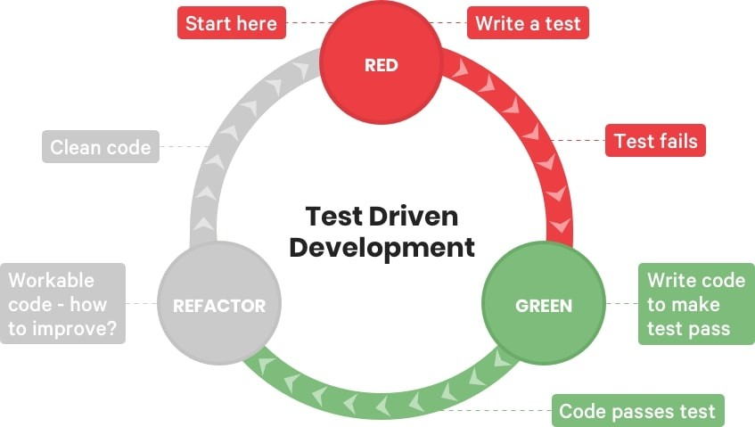

3 Reporte tecnico
3.1 Introduccion
3.1.1 Motivacion
Queremos Analizar los datos de la actividad de vigilancia entomológica de forma oportuna y automática utilizando herramientas de Ciencia de Datos utilizando la base de datos de la plataforma de “Vigilancia Entomológica y Control Integral del Vector” del INSTITUTO NACIONAL DE SALUD PÚBLICA en colaboración con Secretaría de Salud y el Centro Nacional de Prevencion y Control de enfermedades (CENAPRECE). Con el fin de calcular y analizar los índices de riesgo entomológico, y con esto gestionar información para la toma de decisiones en la prevención de enfermedades transmitidas por vector.
El análisis de riesgo entomológico se hace en hojas de cálculo El manejo de la información es ineficiente: La estructura de la base de datos es compleja Adaptar consultas a pequeñas modificaciones es impráctico La visualización georreferenciada de esta plataforma es pobre e inestable
Usar R para visualizar la información en tiempo y espacio Automatizar el manejo de la información Generar visualización georreferenciada con los índices de estegomía
3.1.2 Descripción del problema
El Programa estatal de vigilancia entomología y control integral de enfermedades trasmitidas por vector, realiza diversas actividades para la prevención de enfermedades, las cuales se guían con actividades de vigilancia que proporcionan índices de riesgo entomológico, por ello se hará una API para calcular los índices de riesgo entomológico de forma automática y oportuna para la toma de decisione.
Todas las actividades se capturan diariamente en una plataforma, donde es posible descargar los datos para su reporte y análisis. En el caso de Vigilancia por Ovitrampa(VO), la plataforma calcula los índices de riesgo pero para la actividad de Estudio Entomológico (EE) los calcula por manzana trabajada, estos índices se requiere por localidad de riesgo de manera semanal.
Se requiere poder calcular índices de riesgo del EE por tipo de estudio, localidad de riesgo y por semana epidemiológica de manera automatizada.
La actividad de EE evalúa una muestra antes(encuesta) y después(verificación) de las actividades de control integral para determinar el riesgo entomológico
que hay en un área grande a trabajar (Sectores o Localidad) y si requiere reforzar acciones de control y prevención.
Tener la información oportuna de los índices de riego entomológicos permiten tomar decisiones informades de ¿En Dónde? y ¿Cuándo? focalizar intervenciones.
3.1.3 Gestion de datos
Para validar y poner a prueba la solución propuesta, se plantea la utilización de una base de datos ficticia que sea representativa con las bases de datos reales descargadas de la plataforma. Esto permitirá evaluar el funcionamiento del paquete de R en un entorno controlado. Una vez realizadas las pruebas iniciales y asegurada la confiabilidad de los resultados obtenidos,se establecerá un convenio de confidencialidad con el fin de acceder a los datos reales y evaluar el desempeño del paquete de R en un escenario más cercano a la realidad. Esta estrategia garantizará la confidencialidad de los datos utilizados, a la vez que brindará la oportunidad de comprobar la efectividad de la solución en situaciones reales y aplicables al contexto de vigilancia entomológica y control de enfermedades transmitidas por vectores.
3.2 Marco teorico
3.2.1 Vigilancia Epidemiológica y Entomológica del Dengue
Las enfermedades transmitidas por vectores (ETV), son padecimientos en los que un artrópodo (mosquitos, chinches, garrapatas, etc.) actúa como agente infeccioso. A este tipo de artrópodos se le denomina “vector” (CENAPRECE (2024)). Este vector actúa como hospedero y/o transmisor de la enfermedad, durante su ciclo de vida tienen diferentes hospederos periodo en el cual adquiere la enfermedad y puede transmitirla a hospederos vertebrados como los humanos (CENAPRECE (2024)). Algunos ejemplos de este tipo de enfermedades son: paludismo, dengue, leishmaniasis, oncocercosis, tripanosomiasis, rickettsiosis, fiebre del oeste del Nilo, fiebre chikungunya, erliquiosis, anaplasmosis y otras arbovirosis (Braks et al. (2003); Basile Kamgang et al. (2013); CENAPRECE (2024)). Las ETV representan un problema de salud pública en México. Se estima que donde se localiza la mayor parte de centros agrícolas, ganaderos, industriales, pesqueros, petroleros y turísticos, es decir; en cerca de 60 % del territorio nacional, se tienen condiciones ambientales que favorecen su transmisión ( Braks et al. (2003); CENAPRECE (2024)) . Entre ellas, el dengue representa una grave amenaza, con brotes recurrentes en diversas regiones del país (Braks et al. (2003); CENAPRECE (2024)). Para prevenir y controlar eficazmente las enfermedades antes mencionadas, en México existen los programas de vigilancia entomológica y control integral de enfermedades transmitidas por vectores a nivel federal y estatal (Braks et al. (2003); CENAPRECE (2024)).
3.2.1.1 Vigilancia Epidemiológica:
La vigilancia epidemiológica del dengue comprende, recopilar, analizar y difundir sistemáticamente información sobre la enfermedad. Sus objetivos incluyen la detección temprana de brotes, la medición de la carga de la enfermedad, el seguimiento de las tendencias, la evaluación del impacto social y económico( Bowman, Runge-Ranzinger, and McCall (2014); Weetman et al. (2018); South-East Asia. (2011); Organization (2016); CENAPRECE (2024)). Asimismo ayuda en la asignación de recursos, planificación de acciones preventivas y de contención. Por ello, la vigilancia epidemiológica es esencial para el control y la gestión eficaz contra la enfermedad ( Bowman, Runge-Ranzinger, and McCall (2014); Weetman et al. (2018); South-East Asia. (2011); Organization (2016); CENAPRECE (2024)).
3.2.1.2 Índices Estegomía
Para evaluar la presencia y densidad de los mosquitos Aedes, los programas estatales de prevención y control del dengue utilizan los llamados índices de estegomía. Estos índices cuantifican el riesgo entomológico con respecto a criaderos potenciales y criaderos habitados por larvas o pupas del mosquito Aedes a través del muestreo en campo. El muestreo debe ser uniforme en el área de estudio y la unidad de muestreo básica es la casa o localidad ( Garjito et al. (2020); CENAPRECE (2024)). Al muestrear, el objetivo es observar sistemáticamente contenedores de almacenamiento de agua (Tun-Lin et al. (1996); B. Kamgang et al. (2010); Basile Kamgang et al. (2013); Bowman, Runge-Ranzinger, and McCall (2014); Quintero et al. (2015);South-East Asia. (2011); Organization (2016); Garjito et al. (2020); Tedjou et al. (2020)). Los contenedores se examinan para detectar la presencia de larvas y pupas de mosquitos (Garjito et al. (2020)).
La Organización Mundial de la Salud (OMS ) ( South-East Asia. (2011); Organization (2016); Tedjou et al. (2020)) recomienda el uso de los índices estegomía para evaluar la presencia y la densidad de criaderos de mosquitos en las comunidades (). Los índices utilizados son el índice de casa positiva (HI), el índice de contenedor positivo y el índice de Breteau. En el estado de Sonora el “Programa de Acción Específico de Enfermedades Transmitidas por Vector” (PAE-ETV) usa estos índices para ayudar a determinar las acciones que mitigan el riesgo entomológico. A continuación, presento los índices de estegomía empleados por el PAE-ETV (CENAPRECE (2019); Tedjou et al. (2020)).
índice de casa positiva (HI)
El índice de casa positiva (HI) es definido como la proporción de casas infestadas con larvas o pupas. La OMS ( South-East Asia. (2011); Praptowibowo (2015); Organization (2016); Tedjou et al. (2020); Tomia and Tuhatea (n.d.)) recomienda usar la siguiente expresión para su cálculo (Quintero et al. (2015); Praptowibowo (2015); Garjito et al. (2020); Tedjou et al. (2020); Tomia and Tuhatea (n.d.)).
\[ HI = \frac{ \text{Número de casas infestadas} }{ \text{Número de casas inspeccionadas} } \times 100 \tag{3.1}\]
En Sonora el PAE-ETV utiliza este índice HI para monitorear la infestación de casas. Además, permite evaluar la presencia, y estimar la distribución del mosquito (Quintero et al. (2015); Garjito et al. (2020); Tedjou et al. (2020)). Este índice considera a las casas como unidad de observación, no toma en cuenta la cantidad de contenedores positivos ni la productividad de esos contenedores (Quintero et al. (2015); Garjito et al. (2020)).
El índice de casa positiva se ha utilizado más ampliamente para monitorear los niveles de infestación, pero no toma en cuenta la cantidad de contenedores positivos ni la productividad de esos contenedores (Garjito et al. (2020); Tedjou et al. (2020); Tomia and Tuhatea (n.d.)).
Dentro de un área dada, el cálculo de este índice asume la misma probabilidad de transmisión del virus. De esta manera, si calculamos el índice HI en una muestra de un sector se puede inferir para todo el sector (Garjito et al. (2020); Tedjou et al. (2020)). La OMS considera en riesgo entomológico cuando al menos uno de los índices de estegomía es igual o mayor a 5 ( South-East Asia. (2011); Organization (2016); Garjito et al. (2020); Tedjou et al. (2020))
índice de contenedor positivo (CI)
El índice de contenedor positivo (CI) se define como la proporción de contenedores con presencia de larvas o pupas de mosquito en relación con todos los contenedores que tienen agua ( South-East Asia. (2011); Praptowibowo (2015); Organization (2016); Garjito et al. (2020); Tedjou et al. (2020)). A continuación, se muestra la siguiente expresión para su cálculo ( South-East Asia. (2011); Praptowibowo (2015); Organization (2016); Garjito et al. (2020); Tedjou et al. (2020); Tomia and Tuhatea (n.d.))
\[ CI = \frac{ \text{Número de contenedores infestados} }{ \text{Número de contenedores inspeccionados} } \times 100 \tag{3.2}\]
El índice CI es útil para conocer la proporción de contenedores con agua que tienen larvas o pupas de mosquito, y permite estimar el riesgo en el área estudiada. Este índice ayuda a evaluar la densidad de criaderos en la zona (Quintero et al. (2015); Praptowibowo (2015); Garjito et al. (2020); Tedjou et al. (2020); Tomia and Tuhatea (n.d.)). Por ello, proporciona información para identificar las áreas con mayor riesgo de infestación (Quintero et al. (2015); Praptowibowo (2015); Garjito et al. (2020); Tedjou et al. (2020); Tomia and Tuhatea (n.d.)). Por lo tanto, en caso de que el índice CI sea bajo y el HI sea alto, se infiere que el riesgo es mínimo por cada casa muestreada, pero está muy disperso; Lo cual sugiere el realizar acciones de control y prevención en toda el área de estudio (sector, colonia o localidad) ( South-East Asia. (2011); Organization (2016); Garjito et al. (2020); Tedjou et al. (2020)).
El clasificar el tipo de contenedor permite elegir la estrategia específica para las condiciones particulares del área de estudio, como puede ser aplicar control físico para mantener bajo control o eliminar criaderos potenciales, dependiendo de la cantidad y el tamaño se puede solo tirar a la basura u organizar campañas de eliminación o descacharre de ser necesario. Otra estrategia sería el uso de químicos larvicidas como apoyo al control físico (B. Kamgang et al. (2010); South-East Asia. (2011); Organization (2016); Garjito et al. (2020); Tedjou et al. (2020)).
En caso de que índice CI es alto y el HI sea bajo, esto indica que el riesgo está concentrado en pocas casas infestadas, por lo que se pueden enfocar las acciones en esa zona específica. Los índices son complementarios y se necesitan ambos para identificar correctamente el riesgo entomológico y tomar medidas efectivas para combatirlo ( Tun-Lin et al. (1996); South-East Asia. (2011); Organization (2016); Garjito et al. (2020); Tedjou et al. (2020)).
índice de Breteau (BI)
El índice Breteau (BI) describe número de recipientes positivos por cada 100 casas inspeccionadas ( Tun-Lin et al. (1996); Bowman, Runge-Ranzinger, and McCall (2014); Praptowibowo (2015); Quintero et al. (2015); Garjito et al. (2020); Tedjou et al. (2020); Tomia and Tuhatea (n.d.)).
\[ BI = \frac{ \text{Número de contenedores infestados} }{ \text{Número de casas inspeccionadas} } \times 100 \tag{3.3}\]
El BI proporciona una relación directa entre la cantidad de recipientes positivos y el número de casas inspeccionadas. Cunado los contenedores positivos tienden a ser uno por casa positiva el BI valdrá igual al HI (Tun-Lin et al. (1996); Bowman, Runge-Ranzinger, and McCall (2014); Quintero et al. (2015); Garjito et al. (2020); Tedjou et al. (2020); Tomia and Tuhatea (n.d.)). En el caso que el BI salga alto pese a que los otros dos índices sean bajos, esto indica una alta concentración de recipientes por casa aunque la proporción de casas positivas sea baja y la proporción de recipientes positivos también sea baja, en este caso el riesgo es que mas recipientes ( South-East Asia. (2011); Organization (2016); Garjito et al. (2020); Tedjou et al. (2020); Tomia and Tuhatea (n.d.)). El BI evalúa la distribución espacial de los criaderos y sirve para orientar las acciones de control y prevención. Sin embargo, no refleja la productividad de los contenedores, lo que limita su capacidad para proporcionar una evaluación completa del riesgo de transmisión del virus. Estos datos son particularmente relevantes para centrar esfuerzos para la gestión o eliminación de los hábitats más comunes y para la orientación de mensajes educativos en apoyo de iniciativas comunitarias ( South-East Asia. (2011); Bowman, Runge-Ranzinger, and McCall (2014); Praptowibowo (2015); Organization (2016); Garjito et al. (2020); Tedjou et al. (2020)). La vigilancia epidemiológica y entomológica ayudan a dirigir las acciones necesarias para la prevención y control de ETVs como el dengue. Mediante la recopilación sistemática de datos sobre la enfermedad y los vectores, se pueden tomar decisiones informadas para mitigar su impacto y proteger a la población (Tun-Lin et al. (1996); South-East Asia. (2011); Praptowibowo (2015); Organization (2016); Garjito et al. (2020); Tedjou et al. (2020)). los índices de estegomía son indispensables para la vigilancia y el control del dengue. Proporcionando información valiosa para evaluar el riesgo de transmisión, y permiten la tomar decisiones estratégicas para priorizar acciones y monitorear la efectividad de las intervenciones, para prevenir la transmisión del dengue y proteger la salud de la población ( South-East Asia. (2011); Organization (2016); Garjito et al. (2020); Tedjou et al. (2020)).
3.2.2 Programa de Acción Específico de Enfermedades Transmitidas por Vector
El Programa de Acción Específico de Enfermedades Transmitidas por Vector”(PAE- ETV), realiza diversas actividades para la prevención y control de ETV. Estas actividades se pueden dividir en dos grupos: las de vigilancia entomológicas y las de prevención y control (). El objetivo de todas estas acciones es prevenir y controlar brotes de enfermedades transmitidas por vectores. Las ETV son aquellas causadas por un agente vivo (como los insectos) que ingieren microorganismos de la sangre que consumen de otros seres vivos y después los transmiten mediante sus picaduras (CENAPRECE (2019)).
| Actividades | Abreviatura | Descripción |
|---|---|---|
| Vigilancia entomológica con ovitrampas | OV | Las ovitrampas son contenedores con atributos ideales para que los mosquitos utilicen como criadero De esta forma, el personal del programa de vectores se encarga de revisar, colectar y contabilizar los huevecillos de los mosquitos y realizar una comparación de la densidad. |
| Estudios entomológicos en fase larval y pupal | EE | Búsqueda de criaderos con larvas o pupas de mosquitos dentro de las casas de una zona a trabajar, se realiza una búsqueda previa a las acciones de control de ETV y una búsqueda posterior cuando el área ya ha sido intervenida por las acciones de prevención y control. |
| Estudios Entomovirológicos | EEV | Colecta de mosquitos adultos dentro de viviendas para identificar las especies transmisoras de ETV, asimismo para el análisis por PCR de los mosquitos buscando encontrar ETV circulando en las áreas antes de que se reporten casos en personas. |
| Actividades | Abrebiatura | Descripcion |
|---|---|---|
| Control Larvario | CL | Búsqueda intencionada de criaderos potenciales de mosquitos de un área determinada para la aplicación de medidas de prevención, en todas las casas que permitan la entrada. |
| Rociado a caso probable | RaC | Aplicación intradomiciliar de insecticida con efecto residual en casas dentro de un cerco de 5 a 9 casas en respuesta a un caso probable o confirmado a Dengue, Zika o Chicungunya. |
| Rociado intradomiciliario | RI | Aplicación intradomiciliar de insecticida con efecto residual en casas de un área que se considere de riesgo entomológico y susceptible a contagios de ETV. |
| Nebulización espacial | N | Aplicación de rociado espacial de insecticidas sin efecto residual en un área con alto riesgo entomológico o en respuesta a casos probables o confirmados. |
3.2.2.1 Plataforma de Vigilancia Entomológica y Control Integral del Vector
El Programa de Acción Específico de Enfermedades Transmitidas por Vector (PAE-ETV) registra diariamente en una plataforma todas las actividades mencionadas en las tablas Tabla 1.1 y Tabla 1.2 (CENAPRECE (2019)). Esto permite al programa estatal descargar y analizar los datos. Para la actividad de EE, el programa calcula los resultados por área trabajada y requiere el reporte semanal con base en la ubicación, como se observa en la Tabla 2.2 y el sistema integral de vigilancia de vectores (CENAPRECE (2019)). La actividad de EE implica el muestreo de formas inmaduras de los mosquitos (las larvas y las pupas) en lugar de capturar huevos o mosqui- tos adultos (CENAPRECE (2019)). Se realizan búsquedas sistemáticas para detectar recipientes que contengan agua e inspeccionar la presencia de larvas, pupas y larvas y pupas de mosquitos (CENAPRECE (2019)). Esta actividad evalúa una muestra antes (encuesta) y después (verificación) de las actividades de control integral para determinar el riesgo entomológico en un área trabajada (sectores o localidades) y si es necesario reforzar las acciones de control, ver Tabla 1.1 y Tabla 1.2. (CENAPRECE (2019); Garjito et al. (2020)).

3.2.2.2 Datos Geograficos
El PAE-ETV proporcionó shapefiles del estado de Sonora y como esta todo dividido en sectores. Estos son los sectores en los que se basa la distribución de todas las actividades del PAE-ETV y se usan para poder geopreferencia las áreas intervenidas, determinar el riesgo entomológico y planear las actividades de control y prevención que se requieran (CENAPRECE (2019)). Los shapefiles pueden usarse para crear mapas con los indines de estegomía específicos en tiempo y lugar según se necesite (CENAPRECE (2019)).
3.2.3 Desarrollo de un paquete de R con desarrollo basado en pruebas (TDD)
Para determinar el riesgo entomológico delimitado por área geográfica (desde un sector específico o hasta una localidad o municipio) (rpkgs2023).Es necesario obtener la información de la vigilancia entomología de forma periódica, y comprender la estructurada la base de datos de EE (rpkgs2023). Por lo cual implementaremos herramientas de ciencias de datos para aplicar una metodología en la gestión y análisis de esta información. Esto implicaría calcular los índices de estegomia para un lugar y en un tiempo determinado para la toma de decisiones (rpkgs2023). Este trabajo presenta el desarrollo de un paquete R para el análisis de los datos de vigilancia entomológica del dengue, siguiendo una metodología de desarrollo basado en pruebas (TDD) (rpkgs2023). El paquete combina la potencia de Tidyverse para la manipulación de datos, Devtools para la gestión de Testthat para la escritura de pruebas unitarias (rpkgs2023).
El desarrollo de software en R ha evolucionado hacia metodologías más sofistica- das y automatizadas (rpkgs2023). El uso combinado de frameworks como Tidyverse, Devtools y Testthat permite crear un trabajo con desarrollo basado en pruebas (TDD) para proyectos de R (ver Figura 1.1). Tidyverse es una colección de paquetes R enfocados en la manipulación de datos, análisis estadístico y visualización. Su filosofía funcional facilita la escritura de código modular y limpio (rpkgs2023). Devtools es un paquete R indispensable para la gestión de proyectos, creación de paquetes y publicación en CRAN. Automatiza tareas comunes como la ejecución de pruebas y generación de documentación. Testthat es un paquete R crucial para implementar TDD (rpkgs2023). Permite escribir pruebas unitarias que garantizan el funcionamiento correcto de cada función o módulo del código (rpkgs2023).

Figura 1.1: Diagrama del Paradigma TDD
El desarrollo basado en pruebas (TDD) es una metodología de desarrollo de software en la que se escriben pruebas antes de escribir el código. Esto ayuda a garantizar que el código esté bien escrito y cumpla con los requisitos (rpkgs2023). Escribir pruebas: Se definen pruebas unitarias para cada función utilizando Testthat. Desarrollar código: Se implementa el código que satisface las pruebas escritas. Ejecutar pruebas: Se ejecutan las pruebas para verificar el funciona- miento del código. Refactorizar: Se mejora la legibilidad y mantenibilidad del código sin alterar su funcionalidad. Repetir: Se repiten los pasos anteriores hasta completar el desarrollo (rpkgs2023). Combinar Tidyverse, Devtools y Testthat en un flujo de trabajo TDD es una práctica recomendada para el desarrollo de software en R (rpkgs2023). Esta metodología permite tener menos errores, crear código más robusto, legible y eficiente, facilitando la colaboración y el mantenimiento a largo plazo de los proyectos (rpkgs2023).
El paquete de R del presente trabajo constituye una valiosa herramienta para la vigilancia entomológica del dengue (rpkgs2023). Su uso puede contribuir a mejorar la toma de decisiones en materia de prevención y control de la enfermedad, fortaleciendo las estrategias de salud pública en México (rpkgs2023).
3.3 Limpieza de datos
Los datos para calcular índices de riesgo entomológico son de las actividades de vigilancia entomológica con ovitrampas y estudios entomológicos para fase larvaria y pupal. Estos datos se descargan de la plataforma en archivos .txt y requieren de un tratamiento previo, que incluye un código particular para leer el tipo de archivo, selección de variables de interés, cambiar el formato de los títulos de las variables y cambios en los tipos de datos, antes de poder realizar cálculos y análisis.
La base de datos de Estudio entomológico se descarga en un archivo .txt de la Plataforma “Vigilancia Entomológica y Control Integral del Vector”, tiene 121 variables de las cuales consideramos 16 de interés, 3 de ellas se dividen en dos por lo que resultan en 19 variables de interés.
3.3.1 descripcion de la base de datos de estudio Entomologico de fase larvar y pupal(EE)
La base de datos de estudio entomológico es un archivo .txt de la “Plataforma Vigilancia Entomológica y Control Integral del Vector” (https://geosis.mx/Aplicaciones/EntomologiayControlIntegral/). Este formato requiere ajustes para leerlo en el programa de R. Además, hay inconsistencia en el tipo de dato de algunas variables de interés por lo que se crea una función para cambia las al formato adecuado que le corresponde a cada una para poder trabajar con los datos
Tiene 121 variables de las cuales 16 son de interés para los cálculos de índices de estegomía. En general el titulo de las variables tiene un problema para leerse por ello se cambió los espacios entre palabras por un guion bajo(_) en los títulos de cada variable.
variables de interes
Variable para determinar el tipo de estudio entomológico:
Tipo de Estudio es el nombre de una variable que divide todos los datos de esta actividad en 2 tipos, el primer tipo es “encuesta” que significa que los datos se tomaron antes de realizar acciones de “control larvario (CL)” en el área donde se hiso el estudio entomológico. El segundo tipo es “verificación” que indica que los datos de ese estudio entomológico se hicieron después de realizar acciones de CL. De tal manera se pueden comparar los datos antes y después en un área determinada y evaluar si las intervenciones del PAE-ETV al mitigado el riesgo entomológico o si requieren realizar más acciones.
Variables para la georreferenciación:
Estas variables son las que se utilizan para determinar un lugar en el espacio donde se calcula un riesgo entomólogo. a estas variables se les asigno el formato de Carácter Estas variables son cuatro: Jurisdicción, Municipio, Localidad y Sector, Cada una es parte de la anterior, el estado de Sonora esta dividido en 6, jurisdicciones (ahora llamados distritos) y cada jurisdicción tiene determinados municipios que la conforman, a su vez cada municipio tiene localidades que pueden ser desde ciudades a ejidos. En el caso de sectores cuanto mas grande la localidad como una ciudad puede tener hasta cientos de sectores que la conformen, pero cuando son lugares pequeños como un pueblo o ejido tienen pocos sectores (de uno a 10). Los sectores corresponden a un formato de división geográfica que usa el Instituto Nacional Electoral (INE). Las primeras tres variables antes mencionadas tienen un numero antes del nombre que corresponde al lugar (que numero de jurisdicción es, que numero de municipio es y que numero de localidad es, respectivamente), para evitar confusiones en la selección de datos geográficos separamos este número del resto del nombre y lo colocamos en variables independiente, estas tres nuevas variables son: Clave_Jurisdicción, Clave_Municipio y Clave_Localidad
Variables de intervalos de tiempo:
Se selecciono dos variables para elegir el tiempo la primera es Fecha de Inicio la cual viene en formato de carácter y se cambia a Tipo de dato POSIX para poder usarla como fecha. Esta es la fecha en que se realiza el EE y se puede comparar entre lugares o en el mismo lugar en diferentes tiempos o en tiempos cercanos en el mismo lugar con diferente tipo de estudio la segunda variable es Semana Epidemiológica la cual se usa de forma preestablecida, en secretaria de salud y el PAE-ETV reporta usando como unidad de tiempo el número de semana epidemiológica
Variables para índices de estegomía:
Para calcular los índices de estegomía se utilizan seis variables #(o las primeras 4 solamente) Las variables de Casas Revisadas y Casas Positivas se utilizan para calcular el IH. El Total de Recipientes con Agua, y Total de Recipientes Positivos se utilizan para calcular el IC. (El Total de Recipientes Positivos a Pupas, y No. Total, de Pupas en Recipientes, se utilizan para calcular índices de contenedor positiva a pupa, porcentaje de pupas en los contenedores positivos) Otras variables de interés son la tipología de recipiente positivo que consiste en clasificar en tres grupos diferentes a los contenedores según la estrategia de control que se ejecuta en dicho contenedor. Estas tres variables son: Recipientes Tratables, Recipientes Controlables y Recipientes Eliminables. Cuando se determina un riesgo entomológico alto se hace un análisis de la tipología de contenedor para escoger la estrategia ha emplear
3.3.2 Georeferenciacion de las actividades en (datos Archivos shapefile de los sectores de todo) el estado de Sonora
Para poder georefereciar los indicadores de EE en un mapa se utilizan los datos de Sector para definir en un mapa del estado de Sonora, esto se hace con un archivo shapefile que contiene todos los sectores del estado de sonora, este archivo fue proporcionado por el PAE-ETV.
3.3.3 Shapefile de los Sectores de Sonora
Ajuste entre tipos de datos shapefile para empatar con un dataframe Carga el archivo .shp (sp) Cambiar la proyección EPSG 4326(sp) Guardar como un archivo .shp
Carga el archivo .shp (maptools) Transforma en un dataframe con datos geoespaciales